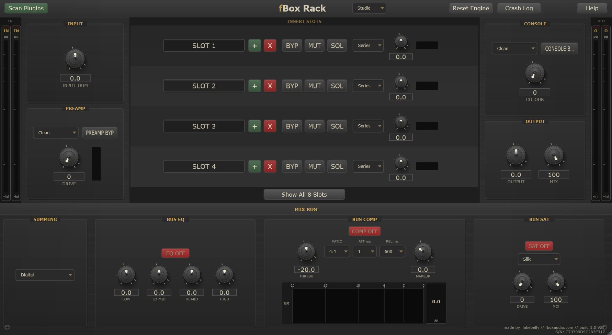

Plugin Host & Console Channel
Modular Plugin Rack - VST3
fBox Rack is a modular plugin rack that hosts up to eight VST3 plugins in series or parallel, with a built-in preamp stage at the input, a full mix bus section, and a console output stage at the output.
It is not just a plugin host. It is a complete console channel. The preamp colours your input. Your plugins do the processing. The mix bus shapes the combined signal with analogue-modelled summing, EQ, compression, and saturation. The console stage colours the output. Your entire plugin chain sits inside a single, cohesive analogue environment.
The preamp offers four modes - Clean, Warm, Hot, and Valve - each modelling a different hardware topology. The mix bus includes a 4-band EQ, a bus compressor with threshold, ratio, attack, release, and makeup gain, plus a saturation stage with selectable mode (Silk or others). The console output adds its own colour knob for final-stage character.
Every instance generates a unique serial number that seeds subtle hardware tolerances across the preamp, EQ, and saturation stages. No two instances sound exactly alike.

Host up to 8 VST3 plugins with per-slot bypass, mute, solo, series/parallel routing, and individual level control.
Four modes - Clean, Warm, Hot, and Valve - with drive control. Colour your input before it hits your plugin chain.
Summing mode selector, 4-band bus EQ, bus compressor with gain reduction meter, and bus saturation with mode selection.
Console colour knob and bypass for final-stage analogue character. Output trim and global mix control.